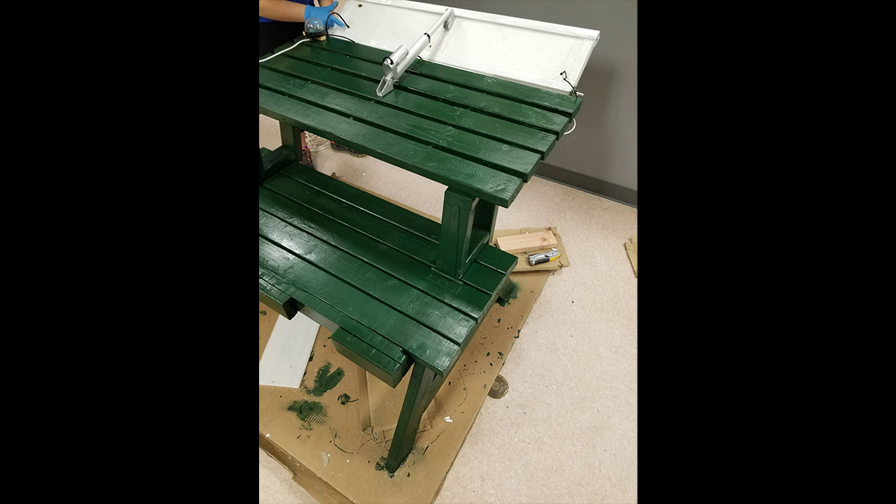
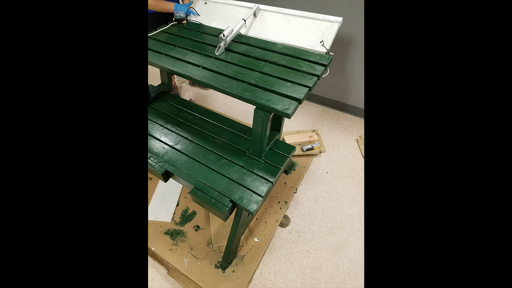

Convertible Solar Bench
As a capstone project, I modeled what my team and I simply couldn't put down on paper.
Tasked with solving a problem using STEM, we conceptualized a convertible
bench to table design with a built-in distress button in cases of emergency.
We thought of parks and college campuses, where this bench could pose a
solution to crime, while still serving as a useful structure unlike many college
"blue light" systems in place today. After modelling the entire structure, my team
and I were able to build the solar bench to the exact specifications we needed.
 
